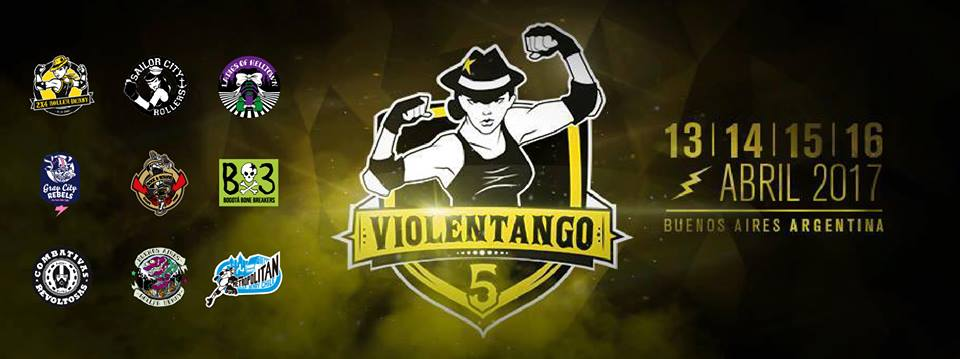
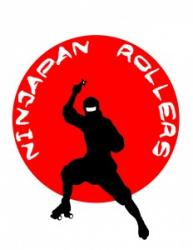
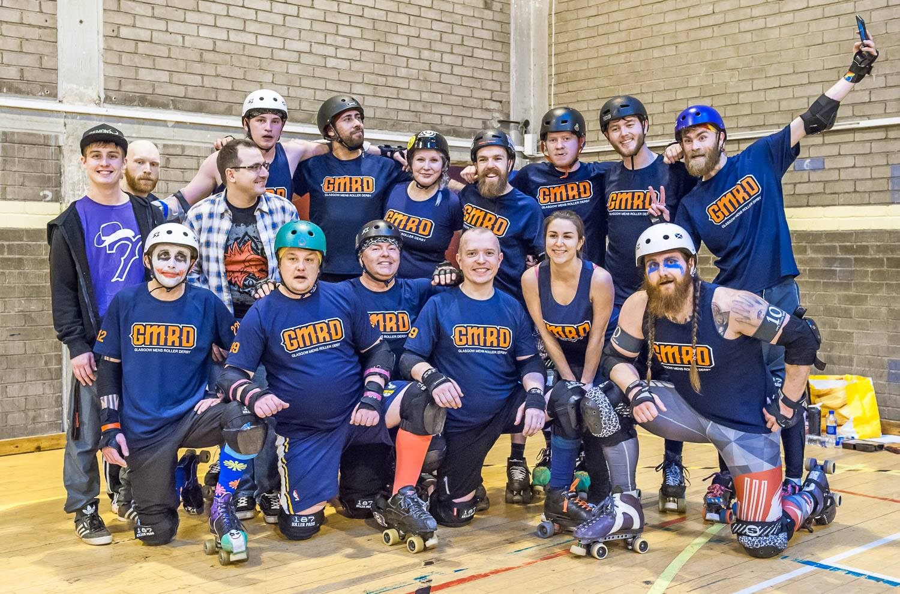
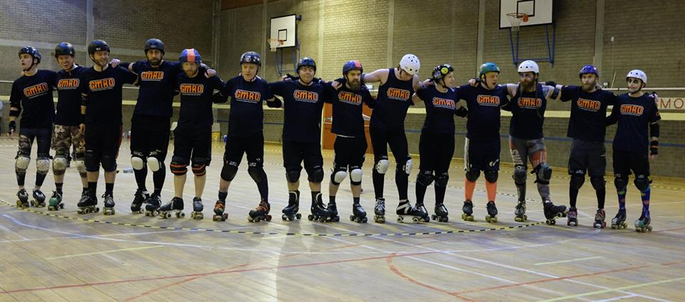
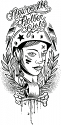

EuroClash, Tomodachi and Quad Wars, Three Tournaments, One Weekend (stats)
Outside of the USA, there were arguably three big "single date" tournament events last weekend: Newcastle Roller Girls' EuroClash, hosting European leagues, a WFTDA Recognised Tournament Okinawa and Japan's Tomodachi Derby Tournament, hosting East-Asia/Pacific and Alaskan leagues, with a WFTDA Sanctioned Tier Mendoza, Argentina's Lado Oscuro Roller Derby's Quad Wars, hosting B/C level Latin American leagues.
There's a lot of games in all of them, so there's plenty of meat for statistical inference.
Let's start with EuroClash.

EuroClash was arranged as a pure invitational tournament, with structure set mostly by the participants' desires for opponents. As a result, EuroClash did not post a "winner" of the tournament. All bouts were WFTDA Sanctioned, as befits a WFTDA Recognised Tournament.
The participating teams for all but the last fixture were: Newcastle Roller Girls, Leeds Roller Derby, Middlesbrough Roller Derby, Tiger Bay Brawlers, Central City Rollergirls, Bear City Roller Derby (Berlin), Paris Rollergirls, Auld Reekie Roller Girls (Edinburgh) and Dublin Roller Derby. (Interviews with the teams can be found on this very blog here: https://www.scottishrollerderbyblog.com/tag/euroclash/ )
The scores (from FlatTrack Stats) are:
| TBB [Tiger Bay Brawlers] | 161 | CCR [Central City] | 167 |
| BCRD [Bear City] | 228 | NRG [Newcastle] | 94 |
| ARRG [Auld Reekie] | 194 | MRD [Middlesbrough] | 99 |
| LeedsRD [Leeds] | 94 | DRD [Dublin] | 312 |
| NRG | 76 | PRG | 238 |
| BCRD | 177 | ARRG | 176 |
| PRG | 192 | DRD | 85 |
| ARRG | 301 | LeedsRD | 93 |
| TBB | 117 | PRG | 203 |
| NRG | 135 | CCR | 177 |
| MRD | 238 | BCRD | 89 |
It's pretty clear that there are several patterns here: two ranking errors in WFTDA (Leeds Roller Derby inheriting the ranking from Leeds Roller Dolls, and Paris Rollergirls' known underranking) are responsible for the majority of the `surprises' between them. Anyone who had seen LeedsRD play in British Champs would have expected the same high individual-skill, but teamwork needing more time to gel playstyle we saw in EuroClash - which is to say that there were moments of brilliance, particularly from their jammer rotation (Killaroo, Shin Pain and Little Dark One standing out for us, and in the stats), but there's still some place to go with the cohesion. And Paris Rollergirls' determination to reach Division 2 playoffs this year is backed by considerable skill and effort in training over the last year - and a consciously constructed schedule of fixtures designed to gain them WFTDA ranking as quickly as possible.
In this context, then, the real surprises are: Tiger Bay Brawlers holding Paris Rollergirls to their expected performance [including holding them to zero points for the first half of the first period], Central City, in turn, 's surprising win over TBB in the first bout of the tournament, Auld Reekie Roller Girls matching their European expectations of tying Bear City to a 1-point win...
...and the curious case of Middlesbrough Roller Derby. The MRD bouts are the only bouts which are a really surprising result in terms of FTS - in the one case, MRD massively underperforming versus Auld Reekie, and in the second MRD massively overperforming against Bear City! (And we mean massively in both cases - Middlesbrough might have been expected to beat Auld Reekie with that kind of points margin, not lose to them by it!)
The possibility, exists, of course, that it was the other teams which were unpredictable... but we can test that with the power of statistics.
We performed a standard linear regression against the results from EuroClash, using score ratios as our measure of performance. As we've explained before, this assumes that the strengths of each team are simply related to each other by their performance - so if Team A is twice as strong as Team B, and three times as strong as Team C, then Team B versus Team C should give a 2/3 ratio win for the B team. Of course, performance varies from game to game, but we can use an "R-squared" value to measure just how good the approximation is for our results. A value close to 1 indicates that the results are very well described by this kind of model, whilst a value close to 0 indicates that no such relationship exists at all.
Running the regression against the full set of results above gives an R-squared1 of 0.39, a disappointingly low value for Roller Derby tournaments in general (which tend to be around 0.7 or higher).
However, given that we know that the MRD results are inconsistent, we can rerun the regression on the results, minus one or both of the MRD games. In this case, we get an pleasingly high R-squared of around 0.93 - actually very high for a tournament. This suggests that, whilst the results might have been surprising when compared with WFTDA rankings, the performance of the teams (other than Middlesbrough) across EuroClash was remarkably consistent.
For interest, then, the relative power-rankings (which should be in the ratio of the points scored between two teams) are:
Middlesbrough Roller Derby 184 Paris Rollergirls 100 Middlesbrough Roller Derby 76 Berlin City Roller Derby 69 Auld Reekie Roller Girls 62 Tiger Bay Brawlers 51 Dublin Roller Derby 50 Central City Rollergirls 47 Newcastle Rollergirls 32 Middlesbrough Roller Derby 31 * Leeds Roller Derby 17
where the three entries for Middlesbrough represent their performance against Berlin (184), Auld Reekie (31) and the average of the two (76). That average is around where we would expect MRD to actually have performed if they were consistent, which is interesting.
Generally matching the results against the existing rankings produces the best matches if we assume that Paris, Dublin and perhaps Auld Reekie, are underranked, and LeedsRD are overranked, with smaller shifts for the others.
This also means that, if we were awarding a Championship to any team, it would be the entirely expected Paris Rollergirls!
Paris will be competing against Bear City only this coming weekend, so this will be a good test of their true strength...
- Of course, the final event at EuroClash was the Team Scotland Roller Derby versus Team Ireland Roller Derby bout. A rematch of the game played at Road to TBC, where both teams were in their training roster (and Ireland had barely selected that), where Ireland won - this time Team Scotland's competition 20 were playing a more-experienced, but still training, Ireland. (Both teams had many skaters from Auld Reekie and Dublin's rosters, respectively, as well as other teams.)
It's fair to say that there was a significant difference in the result, with Road to TBC's tough-but-convincing Irish victory replaced by a tight even score in at the end of the first period, becoming a strong Scottish victory by the end of the second.
The final result, 209 Scotland : 128 Ireland is stronger than the expected result if Dublin had played ARRG, emphasising the importance of the other leagues making up each National Team; however, at half time, the result was a near tie.
1For the statistically inclined, this is actually the adjusted R-squared, not the bare R-squared. We're also using the F-statistic for these regressions, but it closely follows adj. R-squared here.
Click here: for Tomodachi and here: for Quad Wars
Over in Okinawa, the Tomodachi Derby Tournament had three tiers - a WFTDA sanctioned tier, an unsanctioned women's tier, and the men's tier (with just two competitors). Interviews with all the participants are available here: https://www.scottishrollerderbyblog.com/tag/tomodachi-derby-tournament/

WFTDA-Sanctioned Tier
Competing in the Sanctioned Tier were: Okinawa Roller Derby, Tokyo Roller Girls, Devil Dog Derby Dames (the 3 Japanese leagues), Pacific Roller Derby (Hawai'i) and Fairbanks Rollergirls (Alaska, USA). This was a full round-robin, for a total of 10 games between the 5 teams.The results were [FTS]:
| D4 (Devil Dog Derby Dames) | 305 | FR (Fairbanks Rollergirls) | 156 |
| TRG (Tokyo Rollergirls) | 167 | PRD (Hawai'i Pacific Roller Derby) | 138 |
| ORD (Okinawa Roller Derby) | 124 | D4 | 232 |
| PRD | 138 | FR | 188 |
| ORD | 164 | FR | 170 |
| ORD | 126 | TRG | 127 |
| D4 | 251 | PRD | 174 |
| D4 | 167 | TRG | 169 |
| ORD | 172 | PRD | 108 |
| FR | 76 | TRG | 212 |
Running our statistical regression on the tournament, we get an R-squared value (our measure of how "consistent" the games all are) of 0.44, which suggests that there's definitely at least one team which was variable in performance over the two days.
Interestingly, whilst you might expect that removing results such as the ORD v D4 score from the set would improve the R-squared factor for our fit, this is not the case - there's very little change in the R-squared for single-bout changes for the Tomodachi. We believe that this reflects the difference in tournament-experience of the teams involved, versus the higher ranked teams at EuroClash (who are more used to managing their rosters and effort across a long event).
Resulting strengths of the WFTDA tier of Tomodachi, then, are:
Tokyo Roller Girls 100 Devil Dog Derby Dames 100 Okinawa Roller Derby 82 Hawai'i Pacific Roller Derby 60 Fairbanks Rollergirls 60
where we would give the "unofficial championship", by a whisker, to Tokyo.
Your next chances to see some of these teams: Devil Dog Derby Dames will be competing in Hawai'i's Big Island Brawl against the rest of Hawai'i, and teams from the continental USA (June), where you will also find Pacific Roller Derby. Okinawa Roller Derby are off to Europe to play in a tournament hosted by Rollergirls of the Apocalypse, in Kaiserslauten, Germany. Fairbanks are concentrating on their Alaskan neighbours, with the UWR State Tournament coming up in May. And Tokyo Roller Girls are looking for people to play them, so do ask!
Unsanctioned Tier
With two of the three competing teams in the unsanctioned tier essentially exhibition teams (Pan-Asian Spring Rollers representing the Chinese and Thai derby leagues, and Team Women's Roller Derby Japan an open team for skaters who wanted to compete), and the third a Tokyo Roller Girls' home team (Yokosuka Sushi Rollers), there were no expectations on the three bouts.The results were:
| YSR (Yokosuka Sushi Rollers) | 307 | PASR (Pan-Asian Spring Rollers) | 51 |
| YSR (Yokosuka Sushi Rollers) | 307 | PASR (Pan-Asian Spring Rollers) | 51 |
| YSR | 152 | WRDJ (Women's Roller Derby Japan) | 167 |
| WRDJ | 218 | PASR | 157 |
In fact, within statistical error, Yokosuka Sushi Rollers and Women's Roller Derby Japan are inseparable in performance, with the Spring Rollers' lack of time to train together evidence in their lower placing.
Establishing a winner really isn't the point of the unsanctioned tier, however - it's to give the teams a chance to get good experience against people they'd never reasonably be able to play. And, in particular, for the Pan-Asian Spring Rollers, this will be a great learning experience for them to take back to their home leagues in Hong Kong, Shanghai, Beijing and Bangkok.
Men's Tier.
Glenmore Reservoir Dogs and Team Japan Men's Roller Derby (NinJapan Rollers) played each other twice over the tournament, with scores:GRD 273 : TJMRD 113 GRD 288 : TJMRD 138
it should be fairly evident that, despite the Canadians winning both bouts, there's a close-to-significant improvement in NinJapan Rollers even in the second bout. (In both Men's Roller Derby World Cups, NinJapan have noticeably improved over the tournament, so this is in keeping with their character.) These were Japan's first men's games since the last World Cup, in fact, and were more significant for the training opportunity, perhaps, than the resulting scores.
Click here: for EuroClash and here: for Quad Wars
Over to Argentina now, for the Quad Wars 2017 tournament, which saw teams from Argentina and Chile compete in a "B-tier" tournament (in the sense that Argentina uses "B", which is different to Europe - most of these teams are not actual B-teams).

Competing were: hosts Lado Oscuro Roller Derby (LORD); Sailor City Rollers' B team, the Tsunami Bombs; Metropolitan Roller Derby's B team, the Bayonetas; Dirty Fucking Dolls; Brutal Lips; and the Sarcasticats.
Quad Wars has a Star Wars theme, fitting for a host league whose name is "Dark Side" in Spanish, and the teams were arranged in bracketed light and dark side groups, with a playoff for the championship at the end.
Results (from Flat Track Stats) are:
| LORD | 45 | DFD | 215 |
| BRUTAL_LIPS | 51 | NERD | 203 |
| SARCASTICATS | 122 | BAYONETAS | 177 |
| NERD | 150 | DFD | 58 |
| LORD | 91 | BRUTAL_LIPS | 124 |
| BAYONETAS | 114 | TSUNAMI | 142 |
| LORD | 57 | NERD | 209 |
| SARCASTICATS | 73 | TSUNAMI | 157 |
| BRUTAL_LIPS | 34 | DFD | 131 |
| BAYONETAS | 37 | NERD | 247 |
| DFD | 143 | TSUNAMI | 78 |
| BAYONETAS | 47 | TSUNAMI | 63 |
| NERD | 155 | DFD | 27 |
NERD won the tournament overall, but we can provide the same analysis of the team ratings (and how consistent they were) as before.
Running the regression over all of the scores gives us a very good R-squared value of 0.8, suggesting that the tournament was well-run, and all the teams managed their schedules and fitness well over the multiple days of competition.
The estimated strengths of the teams from the regression are (with some confidence):
No Excuses Roller Derby 100 Dirty Fucking Dolls 41 Tsunami Bombs (SCR B) 21 Brutal Lips 17 Bayonetas (Metropolitan B) 15 Lado Oscuro Roller Derby 14 Sarcasticats 10
An interesting feature here is the close grouping of most of the teams: we'd suggest that NERD and DFD could reasonably consider themselves high-B/low-A teams (in Latin American terms), rather than the B/C level of the other closely placed competitors.
If you're interested in seeing more Latin American Derby, then Metropolitan and Sailor City's A teams are competing at the Violentango 5, WFTDA Recognised Tournament in just a few weeks (13-15th April).
Violentango 5: Latin America's continental tournament returns.
Perhaps a little less on people's radar than the big tournaments in Europe, Latin America has been holding continent-scale invitational tournaments for at least the last 5 years.
In particular, the regular "Violentango" tournament, hosted by 2x4 Roller Derby of Buenos Aires, Argentina, is returning in April for its 5th edition.

The previous Violentango (Violentango 4, November 2015) saw two categories, featuring teams from Argentina, Brasil, Chile, Peru and Uruguay divided between the two based on skill.
Violentango 5 is almost as wide in its net, featuring new and returning teams from Brasil, Colombia, Chile and Argentina.
From Brasil: Both returning from VT-4, Sao Pablo's Ladies of Helltown and Gray City Rebels are both competing.
From Colombia: new to VT-5, Bogotá's Bone Breakers (BX3), Combativas Revoltosas and Rock N Roller Queens are all competing (Bogotá is also in the middle of its own national series - the 4to Torneo Distrital Roller Derby - which all are also participating in).
From Chile: returning from VT-4, Santiago's Metropolitan Roller Derby
and from Argentina: all returning from VT-4, Sailor City Rollers, Buenos Aires Roller Derby (B.A.R.D.) and hosts 2x4 Roller Derby.
At Violentango 4, hosts 2x4 Roller Derby took first place in the "upper" tier of the tournament with their A team, OSOM. In the "second" tier, Rotten Vicious Dolls (B team for Dirty Fucking Dolls of Buenos Aires) took the first place position.
However, Violentango 5 is working with a reduced format - a single tier tournament with only A teams competing - so only the one championship will be available. We expect that 2x4 will be challenged strongly by last year's second place Sailor City Rollers, who also recently became full WFTDA members.
Speaking of WFTDA, it's the current spread of WFTDA memberships in Latin America which has inspired this change to Violentango 5. As European teams well know, it is particularly difficult to gain a representative Rank with WFTDA if you can't play a large number of Sanctioned games - and particularly if you can't play high ranked teams.
All of the attendees at VT-5 are either WFTDA members (apprentice or full), or are intending to join. By holding a large number of WFTDA Sanctioned games at one time, the intent is to give a big boost to Latin America in the Rankings, partly ameliorating the issue. As part of this change to the aims of Violentango, this iteration of the tournament is also a WFTDA Recognised Tournament for 2017 - in fact, it may be the first ever WFTDA Recognised Tournament in Latin America.
As well as the tournament, VT-5 will also feature a Bootcamp run by 2x4 Roller Derby on the 15th. As well as covering all aspects of derby track skills, there will, in keeping with the theme of the tournament, be a special section covering the optimal choice of bouts in order to improve your WFTDA Ranking.
And, they're not finished, as the event also includes one of the new WFTDA Officiating Clinics, also on the 15th, to allow Latin American officials to participate in best practice from WFTDA Level 4 Certified Referee, Wernher VonBombed and WFTDA Level 5 Certified NSO Intejill! (This is a "One Day Clinic", as defined on the WFTDA website here)
As with all significant tournaments we cover, we are hoping to provide a viewing guide in the event of streaming, and other resources.
Violentango 5 can be found on the 2x4 Roller Derby Website here: https://www.2x4rollerderby.com.ar/torneo-violentango/ediciones-anteriores/vt-5/ or in the WFTDA Recognised Tournaments page here: https://wftda.com/events/wftda-recognized-tournaments/ Tickets available here: https://www.2x4rollerderby.com.ar/shop/tickets/ (options for whole tournament, day pass and whole tournament + commemorative teeshirt).
Non-US/Canadian Derby Roundup: 1st/2nd April Edition
As is traditional, we’re bringing you another roundup of the upcoming Roller Derby this weekend from across the world. As always, we’re using Flat Track Stats for much of this information – for regions with less good coverage, we also do a bit of intensive searching.
Predictions of bouts are from FTS, if possible, and from our own SRD Rank where FTS cannot make predictions (for example: Latin America, or non-MRDA men’s bouts). Our new SRD Rank is out – the first for this year, and now includes Junior leagues where possible, and a lot more Latin American leagues.
If we’ve missed you from our roundup, please let us know!
Scotland
Whilst there's no derby bouts up here in Scotland, there's still bootcamp:
- Glasgow Men's Roller Derby host their GMRD Jammer Club, an initiative to foster the development of great Jammer skills in the country [EVENT]
UK
As will be the case for the next few months, much of the bouts in the UK are part of British Champs:
- The Tier 2 South, hosted by Royal Windsor Roller Girls, sees them play Taunton and Exeter's Angels of Terror, and London Rockin' Rollers take on Big Bucks High Rollers [FTS Tournament][EVENT]
- The Tier 4 West, hosted by Roller Derby Leicester, sees them bout Birkenhead's Riverside Rollers, and Manchester's Arcadia Roller Derby play Cheshire Hellcats [FTS Tournament][EVENT]
- The Tier 1 Mens is hosted by The Inhuman League, who will be playing Birmingham's Crash Test Brummies, and Manchester's New Wheeled Order play Lincolnshire Rolling Thunder[FTS Tournament][EVENTS]
- And the Tier 2 Mens is hosted by Southern Discomfort B, who will be playing the Super Smash Brollers of Nottingham, whilst Bristol Men's compete with Suffolk Men's [FTS Tournament][EVENTS]
Outside of Champs:
- In Kingston upon Hull, Hulls Angels are hosting Seaside Sirens [FTS][EVENT]
- In Bridgend, Bridgend Roller Derby are hosting Bath Spartans for a doubleheader with beginner/intermediate scrim (sign up on the event page) [FTS][EVENT]
- and in Belfast, Belfast Roller Derby are playing Limerick, with a mixed scrimmage against Limerick B also on the schedule [FTS][EVENT]
Europe
In Europe, the French Nationale returns after a brief break, as do the German Bundesliga and alongside a lot more derby everywhere:
- Les Nasty Pecheresses of Montreuil host the French Nationale Tier 2, featuring Luctece, Paris C (San Culottes), Psyko'Quads of Sainte-Geneviève-Des-Bois, Rouen and Orléans[FTS Tournament][EVENT]
- Karlsruhe's RockARollers have a big birthday event, featuring [EVENT]:
- In Gothenburg, Gothenburg Roller Derby hosts Tampere and Copenhagen for a triple round-robin [FTS 1,2,3] with a juniors exhibition game too! [EVENT]
- Vienna Roller Derby B hosts Sheffield Steel B (the Crucibelles) [FTS][EVENT]
- In Nürnberg, Sucker Punch Roller Derby are playing a mixed team from Münich Rolling Rebels and Roller Derby Regensburg [FTS?][EVENT]
- In Vigo, Spain, Roller Derby Vigo host Black Thunders of Madrid [FTS][EVENT]
- Brussels Derby Pixies are hosting not one but two events: a triple header round robin with Antwerp and Lillie on Saturday [FTS 1,2,3][EVENT]
- ...and a Sur5al tournament on Sunday [EVENT]
- Les Menneles Strasbourg host a massive two-day event, with Namur B v Team B'Est (Hell's Ass B)[FTS] and Quadstrators v Rock'Est [FTS] on Saturday, and Hell's Ass Derby Girls v Namur A [FTS] and Holywheels of Liege[FTS], Track'Ass v Quadstrators [FTS] and Rock'Est [FTS] [EVENT]
- and on Sunday, Bergamo's Crimson Vipers are hosting Galway City Roller Derby, all the way from Ireland! [FTS][EVENT]
- And in a non-bout event, Nidaros Roller Derby are hosting the exciting Camp Nidaros bootcamp, which we flagged a few weeks back. [EVENT]
Pacific
There’s one big tournament starting off in in the Pacific region this weekend:
- Auckland, NewZealand hosts the National Top10 tournament's first bout of the season, as they play the Dead Ends Derby of Christchurch[FTS][EVENT]
-
Also in New Zealand, Otautahi Roller Derby host their first home teams game, with Pirates versus Vikings [EVENT]
- In Albany, Australia, there's a bootcamp, as Mary Fagdalene and Mick Swagger host their only bootcamp in West Australia [EVENT]
Latin America
In Central and South America...
- In Bogotá, the 4to Distrital Tournament continues, hosted this weekend by Rock N Roller Kings. It sees Bogotá Bonebreakers take on Rock'N Roller Queens B ("Queens"), and BX3 B, the Baby Breakers, play Maquina del Mal Feminino in the women's tier, and Maquina del Mal (Masculino) play Légion Roller Quads in the men's. [FTS] [EVENT]
- And in Chile, the Torneo Brutal men's tournament continues, with Chile's men's teams competing against each other. This is something similar to a European "Derby Sevens" format, with 11 6-skater teams competing in 30 minute games over the weekend![EVENT]
- In La Plata, Argentina, Chat Noir are hosting a double header, competing against La Dinastía Roller Derby also of La Plata [FTS] and then hosting a B/C level Coed bout [EVENT]
Other Events.
Our semi-regular “other events” section highlights things further in the future you might want to keep an eye on.
Coming up in April, at Rainy City Roller Derby's WFTDA World Summit,
- England Roller Derby host a England v England scrimmage https://www.facebook.com/events/279608169118933/
also in April, Central City Rollergirls host the
- ANIMEzing Tournament, an open roller derby tournament for intermediate level skaters who identify as female https://www.facebook.com/events/127299004450603/
WFTDA Membership Status for DRG
As you may have heard last week, the Women's Flat Track Derby Association (WFTDA) has extended full membership status to nine graduating leagues after completion of the WFTDA apprenticeship program! The full list of new members can be found in the press release here.
The leagues announced included members from across the United States, South America and more in line with our reporting: Europe! On the back of four skaters making the Team Scotland squad; Dundee Roller Girls becomes only the third league in Scotland to receive this graduated status! Interestingly enough, Tenerife Roller Derby, the hosts of the December tournament that featured the Dundee side, have also graduated to full WFTDA membership!
There are currently (as of March 2017) 399 WFTDA member leagues and 54 leagues in the WFTDA Apprentice program globally. Leagues joining these ranks enjoy benefits including the ability to compete in sanctioned games, discussions with other member leagues and access to learning resources for skaters and officials. Dundee Roller Girls begin their WFTDA membership a Class C member and we caught up with the leagues co chairs, Laura Liston #07 and Crown Jewels #67, for a chance to learn a bit the history of DRG and what the future holds for this up and coming league.
[gallery ids="16584,16583" type="circle" columns="2"]
Q: Hi guys! So WFTDA full membership, a pretty huge step for a league that was skating in a car park at the back of 2009, eh?
L: It's huge for us. I still can't quite believe we get to consider ourselves in the ranks of the incredible teams in WFTDA. Everyone has worked really hard over the years to keep our wee league together so this is a lovely reward.
CJ: Ha Ha! Yes a massive leap for us. I think it’s just amazing how we’ve managed to progress, I think most leagues probably started off in a similar fashion, a very much DIY existence. It still is (DIY) today but there is so much more awareness around derby that is does become slightly easier to progress.
Q: So with Dundee Roller Girls forming around 2011, you both have been involved for a long time. How have you seen the league grow in these past few years?
L: For me I think the biggest growth we've seen is when we created our B team and home teams. Giving our newer skaters the opportunity to develop and to get game experience has allowed the whole league to grow - from them getting games to our new officials getting game experience at an appropriate level. So proud of them all.
CJ: We’ve seen a lot of league members come and go, but there are still a core few that remain. Year on year we’ve continued to build a group of league members that wants to do their best for DRG, whether that’s officiating or skating. I think the drive in people is what pushes the league forward. We have so many committed members that look for the best guest coaches to come to the league, arrange challenging games for us, run the financial side of things and look to push us on to the next level. This is what has allowed the league to grow to where it is now and will continue to do so in future.
Q: What was the deciding factors for you guys to pursue the WFTDA Apprenticeship program? Was it a hard decision for the league to make since it is quite a lot of work that goes into the full program?
L: It was a lot of work in terms of admin but it made sense as the next step for us. Being so isolated in Scotland, we were finding it hard to find leagues of a similar level who would travel to play us. Joining WFTDA has given us more game opportunities and more varied game offers.
CJ: I don’t think it was a hard decision to make, it’s something we have aspired to for a long time and again allows us to push the league forward. The deciding factor was probably looking to get us more involvement in international events, to face and learn from some of the best leagues in the world.
Q: An interesting point to maybe make here is your discontinued presence in British Championships this year.. Did your decision to pursue WFTDA membership affect your attendance to Brit Champs 2017? A close miss to promotion in 2016, and a great game against Swansea held high promise for your league in the following year?
L: The main factor involved in us leaving British Champs was the organisation as a whole. Having to travel so far to each game meant we needed the organisation to be really clear and far in advance, which it wasn't for us. Our B team was also really disadvantaged by our A team's involvement in Champs as it meant their season was quite limited.
CJ: I think partly it did affect our decision to leave champs. We needed to try to make sure we were focusing our energies in one direction and for us, as a league on a whole, that was WFTDA.
Q: We have already seen your league representing internationally with the aforementioned Tenerife Tournament, are we going to see more of the Dundee crew hitting sights outside of the UK?
L: Well our officials are now travelling all over Europe for games - Spain, Sweden, Finland and Norway recently. The Colliders are also heading to Ireland this year!
CJ: Let’s hope so! My dream is to get to Vienna (my favourite city) after that I may retire! It would be great to get further afield but sometimes finances are a limiting factor in that respect.
Q: Do you have any tips for aspiring leagues, either the new leagues blossoming in Scotland or others wishing to gain WFTDA status?
L: To go for it! WFTDA membership isn't related to wins, or scores etc. It's for leagues who want a say in the future of roller derby. The support we had to develop through Apprenticeship from Auld Reekie, Newcastle Roller Girls and our rep from Hellfire Harlots was amazing.
CJ: I think mainly consult other leagues for advice. We have always been helped immensely by other leagues in Scotland and across the UK and we are always willing to provide advice to other leagues. Decide on what you want your focus to be and aim for it, find out as much as you can about what you want to achieve and ensure you have committed league members willing to put in the work towards it.
Russia at the Pohjola Cup: the Furies feed back
As we reported last year, this season's Pohjola Cup - the official tournament for the leagues of Northern Finland - has broken new ground by inviting their first competitors from outside Finland itself.
St Petersburg's White Night Furies, Russia's first Roller Derby team (and currently the only bouting one) have played about half of their scheduled bouts in the tournament now, so we thought we'd catch up with them to see how it has been.
The Furies' Hulk answered a few of our questions.
How did the Furies get the idea to compete in the Pohjola Cup?
White Night Furies decided to to compete in 2016-2017 Pohjola Cup a year ago. We wanted to take a part in a tournament or Cup, to try our derby and team skills and and to see what we can do if we have one game a month, every month. I found the Pohjola Cup organizer (it wasn't very easy ><) and asked if we can join, despite the fact that we are not from Finland. And we're here :)
It's fair to say that the tournament has been a tough experience for the Furies so far, as first tournaments often are. How have you been adapting to the experience - what have you learned?
I can say that all our bouts there were tough :) Each bout we try to use different combinations of tactics and players and see how it works. Each game we change bench stuff and player's roster - from now we just started participating in serious games and we need to know what and how works. That's why I can say that this Cup is very helpful for us - we're learning new things. Also our first two games were on one day, and we'll have the same experience in April, in Oulu. That can be tough, especially if you drive the whole night and then play :) We've learned to play all together as a team regularly (and of course faced a lot of problems inside the team from this), to play a roster of 12, to have a bench and line up for the first time in our team's life :)
At this point, are you hoping to return to the Pohjola Cup in the 2017/18 season?
And of course, we are planning to return to the Pohjola Cup next year, we should climb higher to the first place :)
This year is very much the year that the Furies are breaking out and making waves. What else do you have planned for 2017?
Our plans are huge for this year: we founded a B-team and they will have their first game in May, also all of us will have 3-4 days of awesome practices with a Rose City coach who will come and train Team Russia members in Saint-Petersburg: we'll have a big presentation and couple of newbie practices for girls in Minsk, Belarus. One of our big plans is to visit the Moscow team again and help them with making a team (they are reunited again this year!) and, in September-October we want to play 2-3 bouts and haven't decided yet where, but are thinking about teams in Sweden and Netherlands!
The Tomodachi Cup: NinJapan Rollers (Men's Roller Derby Japan)
As the Tomodachi Derby Tournament kicks off in Okinawa, we have one final team interview to post, even as scores come in from the first bouts.
We started our coverage with Canada's entry into the men's tier, Glenmore Reservoir Dogs, and so it is only fitting to finish with their opponents: the Japanese Men's National Team, NinJapan Rollers!
NinJapan Rollers burst onto the derby scene at the first ever Men's Roller Derby World Cup, back in 2014, where they captured the hearts of the audience, and the other teams with their spirit on track. Returning in 2016, after devoting the intervening two years to actively promoting and growing men's derby in Japan (where they are still the only active league of Japanese nationals), NinJapan improved on their performance in 2014 with two victories. This is the first outing of what may become the 2018 iteration of the national team.

Spectators and teams were both very impressed by the improvement in the NinJapan Rollers from 2014 to 2016. How did you feel about your performance in the 2016 Men's Roller Derby world cup, and what was your high-point?
In Japan, there are not so many people playing the Roller Derby, and we knew that the level was different in the rest of the world.
We could only watch games from aronnd the world on the Internet, and we played only one game against a men's team between the 1st and 2nd [Men's] World Cup... only 1 day before 2nd World Cup itself!
When World Cup started, it was different feeling from what we imagined, in terms of tactics, contact, speed. However, we are satisfied with our performance, the increase in what we can achieve, and our victories!
One of the reasons for your success has been your active recruiting policy - trying to build Men's Roller Derby in Japan between the World Cups. Can we talk about how this is continuing?
We use the Internet to disseminate activities. Roller Derby is not known yet in Japan. We want to do activate more if we have two teams and be more popular.
★At the Tomodachi Tournament, you will be playing Glenmore Reservoir Dogs. What are your aims, and preparation for playing them?
We're very glad that we get to play another men's team, before the 3rd World Cup! First of all, we thank Glenmore for playing us.
The purpose of this game is checking our level before World Cup, our roster was changed. Of course, we also want to win!
As the derby also evolves, we are researching the world standard and practicing to meet it.
And when you are not competing, which Teams and games are you looking forward to watching?
Seeing the Alaskan and Hawai'ian teams; some members were playing in Japan and we have great memories of practicing with them at that time.
What are NinJapan Rollers plans for 2017?
It's just one year to the next World Cup, so our World Cup project will start.
We will practice again from the basics, to team we will be sharing to raise awareness.
★Heading towards the MRDWC in 2018, what are NinJapan Rollers aiming for at the next World Cup?
We were able to get our first victory and the second victory [at MRDWC2016], thanks to the cooperation and encouragement of lots of people. Next time we want to get even more wins, that just equal what we have already done. We will exceed what you can imagine, and keep achieving all of our expectations!
Our ongoing coverage of the Tomodachi Tournament can be tracked here, with scores updated as they are announced, and video when available.
Fire, steel and friendship - Irn Brn set sail for uncharted waters
The West of Scotland is renowned for forging some of the most iconic vessels and cultural objects in the world - from the QE2 to red phone boxes.
It should come as no surprise then that UK roller derby's newest team should have its roots in the industrial heart of Scotland - where history was literally forged from fire and steel - or that they call themselves the Irn Brn.
Glasgow Men's Roller Derby (GMRD) have already gone on a remarkable journey since they first sparked into life last summer.
Photo by Duncolm Sports Photography
Anyone involved in roller derby will know that the tectonic plates beneath our sport are always moving - teams rise, teams fall, legacies are secured, old legends fade.
Some skaters drift away from the sport for good - others depart teams to form new alliances as they seek different horizons and chase different goals.
That was the case with the founding fathers - and mothers - of GMRD.
At the centre of the league is an ethos - like the nucleus at the heart of an atom - attracting skaters to it like toe-stop-hopping protons:
Skate, create, innovate - work hard together with friends to take on the world.
GMRD pride themselves on being more than the sum of their talented parts (the roster includes a range of international-standard skaters - including seven members of the Power of Scotland training squad).
More than a league, more than a team - this is a family.
The Irn Brn set sail next month for uncharted territory for a Scottish men's team - the 2017 British Roller Derby Championships.
GMRD will play in Men's Tier 3 North - alongside the Bairn City Skelpies (also breaking new ground for Scottish dudes), Teesside Skate Invaders and Men Behaving Derby.
First up on April 16 is a trip to the Emerald Isle, where GMRD take on the Skate Invaders.
GMRD Managing Director Hugs and Kisses (aka JR) said: "We can't wait to get on track at the British Champs - it's going to be an adventure for everyone associated with GMRD.
"Teesside will be tough opponents and we are preparing for a very competitive game against a talented team of top skaters.
"However, we know we have a strong team and have been training hard. It's going to be a great opening day of derby for Tier 3 North."
Many of GMRD have played Teesside before as members of other teams, but there have been line-up changes since then and the standard of derby is forever climbing skywards, so it will be an intriguing match-up.
GMRD will be buoyed by a good run of form which saw them beat Crash Test Brummies B (Beta Test Brummies) 199-135 and Barrow Infernos 226-159.
After the double-header in Dublin, the action will move to Grangemouth on May 13, when GMRD take on the Skelpies at Grangemouth.
The third double-header will be hosted by GMRD at the ARC Sportscentre in Glasgow on June 10, with GMRD completing their fixtures with a game against Men Behaving Derby.
The top two teams in Tier 3 North will then play the two teams in Tier 3 South, with the victors of each game promoted to Tier 2.
Hugs added: "We're under no illusions - this is going to be a tough series of games, but we really can't wait. This is what we've been working hard towards since we formed the league last year.
"Teamwork will be key. We have some very skilled individuals within the team, but our goal is to be a cohesive unit firing on all cylinders - forged in the heat of intense training sessions, scrims and games."
Check out GMRD on Facebook for all the latest information on games, bootcamps and special events.

British Champs North Update 23 March:York Minxters, Whippin Hinnies and more
Welcome to our second update on the Northern Tiers of British Champs. We're aiming to do approximately monthly updates on the Tier 1, Tier 2 North, Tier 3 North and Tier 4 North, partly through the lens of specific teams in each.
Since the last update, the Tier 1 saw our advertised bout between Leeds Roller Derby and Tiger Bay Brawlers end in an impressive win for the Cardiff team (294:44). Performance stats show that at least some of this seems to have been "first game" syndrome for LeedsRD, who significantly improved their performance in the second period (scoring 70% of their points in period 2, as well as taking less penalties). If they perform at their period 2 level, or continue to improve, they'll be a significant force in the Tier in future games.
Tier 2 North has seen another round of bouts, with our tracked team, Newcastle Roller Girls' Whippin Hinnies facing the formidable Rainy City Tender Hooligans, with the Hooligans taking the win, 348:62. This is a approaching half the score ratio than Rainy B managed against Wirral, which looks promising for the Hinnies' next bout in the tier. Looking at the stats (not published yet), this was a tough game for the Hinnie's jammers, with only Ania Marx achieving lead jammer status against Rainy's exceptional blocking. Hosts Wirral also played, losing to Manchester Roller Derby with the score 101:248.
The Tier 3 North saw our tracked team Granite City Roller Derby win a pretty closely contended game against Halifax Bruising Banditas - finishing 130:117. The stats show particularly strong jamming performances by GCRD's Lizzie Rascal (75% Lead Jams!), Team Scotland's Udder Mayhem, and Kami-Tazzy; blocking-wise, high VTARs are with Crimson Chaos, Team Scotland's Rock'N Riot, and Pert Hits. North Wales convincingly defeated hosts Furness Firecrackers in the other bout.
The first Tier 4 North bouts saw tier-champions favourites Mansfield crush Durham City Rolling Angels 398:38, and the second Durham team, Durham Roller Derby, lose to Grimsby Grim Reavers 198:110.
Tier 4 North is coming around again for another set of bouts this weekend, and features the York Minxters' first ever bout in British Champs (as well as hosts Mansfield versus Durham). In honour of the occasion, we caught up with their Captain, Gem O'Cide to see how they're feeling:
So, let's start by talking about last year, which was a big year for the Minxters. After several years of just playing a few bouts, 2016 saw the team play 7 over the season, with some pretty challenging opponents. What lead to this surge in activity, and has it been a good thing for the team?
2016 was a year of practice, practice and more practice. We had a lot of changes in the team and a lot of up and coming skaters joining the rostered team- this meant our dynamics changed and we needed to learn how to play together. We very much wanted to take the "Win or Learn" approach and felt some real time game play - working as we would on game day- would be best to learn this. Everyone loves scrimming and it helped us grow confidence and learn how each other work, where our strengths lie and what we needed to improve on.
After missing the first two years of British Champs, you're entering this year for the first time. Why now?
We want to get started on the Champs journey! We've had a massive new skater intake and great retention and it would be awesome to get the ball rolling and have something yearly to aim for! Something to show everyone what we are working towards...
You're entering into the tournament in Tier 4 North. Flat Track Stats and us agree that you're pretty much in the middle of the Tier in terms of expected performance - but there's a lot of unknowns, as you've only played one of your competitors before (Grimsby's Grim Reavers). How are you preparing for the tournament?
First off shout out to Reavers. We love those guys!
We are playing and training to our strengths. We've had some great input from Rule 56, as well as other guest coaches who have analysed our play. This had helped massively in preparing by knowing what we focus on from A-team players and what direction to take our training in. This has given us concrete goals and really solidified our skills and tactics.
Your first bout in Champs looks like being a tough one - Wakey Wheeled Cats are one of the strongest teams in this Tier! What are your aims for this particular game?
For the Wakey game, we are going into a tough one! But this is a great challenge to practice what we have learnt, and are continuing to learn, in training. For me as Captain, all I ever want to see for my team is that they are working hard as a team and putting our training into practice. We go into and leave this as a team who wins or learns!
As well as British Champs itself, what other plans and events do York Minxters have in store for 2017?
We have lots of fun things planned for our newer skaters after Champs - they have helped out with NSO roles and August will be and time of fun and folly for everyone! After Champs we will be having a bit of fun for the team, then looking at some more challenges to prepare for 2018!
Upcoming bouts in other tiers are: Tier 1 - our tracked team, Leed Roller Derby, host a massive triple header on April 8th, where they will play Bristol Roller Derby, London Brawl Saints will play Tiger Bay, and newly-rebranded Middlesbrough Roller Derby will take on Birmingham Blitz Dames.
The next Tier 2 bouts are on 22nd April, where Newcastle host a double header, with the Whippin Hinnies playing Manchester Roller Derby (which should be their closest bout yet), and Liverpool Roller Birds bouting Wirral Roller Derby.
Tier 3 also plays next on 22nd April, with Aberdeen the venue, as hosts Granite City Roller Derby play the other Scottish team in the tier, Auld Reekie Roller Girls' Reserves; and Furness Firecrackers playing Halifax Bruising Banditas.
EuroClash Interviews: Newcastle Roller Girls
With Newcastle Roller Girls' first International Tournament, EuroClash, less than a week away, we just have time for one final interview topic...
...the hosts of EuroClash themselves, Newcastle Roller Girls. NRG's Canny Belters had a very good 2016, playing across in the USA for the first time, as well as topping British Champs Tier 1 (becoming the second ever Champions). Along the way, they also came up with the idea of hosting their first ever International tournament - and people will probably remember their campaign to win funding to support it. This being successful, the last few months have been spent on organising the very tournament which we're writing about...

Missy Pow Pow, Canny Belter's Co-Captain, and one of the driving forces behind EuroClash answered some of our questions:
Newcastle's Canny Belters had an exceptional year in 2016, topping British Champs Tier 1, after promotion from Tier 2 the previous year. You've now stepped down from British Champs this year, leaving the Hinnies to carry the torch - but was the Championship win your goal from the start, and how did it feel to win it?
We always play to win! [laughs] But we didn’t think we’d necessarily will ALL the games. The first win against Glasgow came as a big shock to me, I just wasn’t expecting it. The game was actually a WFTDA strength factor challenge so we had a score in mind that we wanted to achieve, which was nowhere near a win. I remember looking at the score board during the game, unbelieving!
We quickly re-assessed our goals and from that point our aim was to win the whole Championship. It was an amazing experience, watching not only your team mates, but the rest of the league, friends and family come together to support and push us forward.
You also played over in the USA, at the most popular destination for EuroClash attendees - Beach Brawl in Florida. This was Newcastle's first trip to the USA, and, as is traditional, you beat expectations about the US teams you played. How was the transatlantic experience - the environment, and the potentially different style of play?
We were really excited to play US teams for the first time; it felt like a good way to benchmark where we were, as it can be hard to gauge from rankings alone. The tournament was an amazing experience – being in one place that was all about roller derby, being surrounded by different teams, most of which were from the USA and Canada, and of course having the opportunity to bond as a team away from the pressures of work, and derby admin, was wonderful.
With regards to style of play I don’t think there is a European style or an American style. Each team is different. We played two American teams, Blue Ridge, and Oklahoma, and they were entirely different. What I liked best though is not knowing a lot about who we were playing, therefore we were able to go in to each game just playing our own game without thinking about the style, strengths or weaknesses of the opposition.
Your brother league, Tyne and Fear, have been hosting the Men's European Cup for several years now - it almost seems surprising that there's not been a women's equivalent in Newcastle until now. What led to the decision to organise EuroClash this year?
We've been working hard to climb the rankings so we know how hard it can be for teams to get high level WFTDA sanctioned games. In 2015 we played our first European tournament at SKOD, then last year Beach Brawl; both tournaments not only boosted our rankings but really raised our game - we learned a lot. Having had such a great experience abroad, we decided we wanted to create opportunities like that here in the UK, to play our part in developing the sport. So we're really excited to put on a whole weekend of high level European games, including teams who don't often play in the UK.
How did you select the teams attending EuroClash - they're all pretty close in the European Rankings, but were there other considerations?
It mostly came down to where teams were ranked as all of the games will be WFT-DA sanctioned. We really wanted to play (and watch!) some exciting games and we also thought about which teams had never played each other before.
2017/8 has really become the "year of European Roller Derby" - with so many tournaments, new and established, located or relocated to Europe. How would you place EuroClash in all of this?
We’ve been planning EuroClash since last year so we like to think we were ahead of the curve there! [laughs]
Getting the opportunity not just to play but also to watch more high level live roller derby at the likes of the first WFTDA Playoffs in Europe this autumn and the 2018 Roller Derby World Cup is fantastic - it makes everyone raise their game and that can only be a good thing for the sport.
Which teams are the Canny Belters most looking forward to playing at EuroClash?
We’ve never played Bear City or Paris before so we’re really excited to play both of those teams. We watched Paris play at Beach Brawl last year, and the year before at SKOD and they’re such a strong team that keep going from strength to strength. I’m really looking forward to seeing how we fare against them.
I have to admit that I’ve never seen Bear City play. They are a complete mystery to me, which in itself is super exciting! As for Central City, we played last in 2015, it was a close game with CCR narrowly taking the win. This game is bound to be an-other nail biter!
And which teams, or matchups, are you most excited to be able to watch when you're not skating?
Bear City v MMR looks like it’ll be an edge of the seat game - they’re even closer now the new WFTDA rankings have just come out. And we’re really looking forward to seeing some of our NRG team mates in action in the Team Ireland v Team Scotland re-match - we didn’t get to see them at Road to TBC last year, but even just following the game on Twitter had our hearts racing so we think that game will be a brilliant way to end the weekend.
Finally, after EuroClash, what's next for the Canny Belters in 2017? (And is it too early to predict a 2018 EuroClash?)
We’ve got some home fixtures still to confirm for this season, but the big news is that we’re off to Colorado in June to play at Mayhem. And if EuroClash 2017 is a success then we’d love to make it an annual event; watch this space…
EuroClash will be held from the 25th to the 26th March at the Walker Activity Dome, Newcastle. Ticket available here:https://www.euro-clash.com/tickets , and on the door.
Non-US/Canadian Derby Roundup: 25/26th March Edition
As is traditional, we’re bringing you another roundup of the upcoming Roller Derby this weekend from across the world. As always, we’re using Flat Track Stats for much of this information – for regions with less good coverage, we also do a bit of intensive searching.
Predictions of bouts are from FTS, if possible, and from our own SRD Rank where FTS cannot make predictions (for example: Latin America, or non-MRDA men’s bouts). Our new SRD Rank is out – the first for this year, and now includes Junior leagues where possible, and a lot more Latin American leagues.
If we’ve missed you from our roundup, please let us know!
Scotland
Whilst Auld Reekie A are down in Newcastle:
- Auld Reekie Roller Girls' ASTROs are hosting Bairn City Rollers' Central Belters [FTS] in Edinburgh [EVENT] (FTS favours the visitors here)
UK
As will be the case for the next few months, much of the bouts in the UK are part of British Champs:
- The Tier 3 West is hosted by Sheffield Steel Rollergirls, who will play Milton Keynes, with Hallam Hellcats taking on Nottingham Roller Girls [FTS Tournament][EVENT]
- The Tier 4 North is hosted by Mansfield Roller Derby, who will play Durham Roller Derby, along with York Minxters facing Wakey Wheeled Cats [FTS Tournament] [EVENT]
Outside of Champs:
- Newcastle Roller Girls host EuroClash, their first international Roller Derby tournament. Featured teams are: Edinburgh's Auld Reekie Roller Girls, Berlin's Bear City Roller Derby, Birmingham's Central City Rollergirls, Dublin Roller Derby, Leeds Roller Derby, Middlebrough Roller Derby [recently rebranded from Milk Rollers], Paris Rollergirls, Cardiff's Tiger Bay Brawlers along with Newcastle Roller Girls themselves. Also present are Team Scotland Roller Derby and Team Ireland Roller Derby for a rematch ahead of the World Cup in 2018. We've interviewed all the teams here: and maintain a record of the timetable and scores here: [FTS Tournament][EVENT]
- Liverpool Roller Birds host a double header, as LRB A take on Dublin Roller Derby B [FTS] and LRB B play Bristol Roller Derby B [FTS] [EVENT] (FTS expects close games, favouring the hosts A, but the visitors B)
- Portsmouth Roller Wenches host a double header against Brighton, with Portsmouth A playing Brighton Rockers [FTS] and Portsmouth B facing Brighton Rockerbillies [FTS][EVENT] (FTS favours the hosts for both bouts)
- On Sunday, Grimsby Roller Derby hosts a double header against Manchester, with Grimsby A against Manchester B (The Furies) [FTS], and a men's bout with Brothers Grimm against The Chaos Engine [FTS] [EVENT] (FTS favours the home team, slightly and can't predict the men. SRD Rank favours the visitors for the men's bout.)
- Late Addition: Suffolk Roller Derby are hosting a coed/OTA open event, with a Rick and Morty theme, on Sunday. [EVENT]
Europe
In Europe, it seems quite quiet at the moment:
- In Sweden, the National "Seriespel" continues, with the Elite tier seeing Dock City host Gothenburg, The Royal Army and Crime City over the weekend. Both Gothenburg and Crime City are, as usual for them, playing with their special rosters for the Eliteserien, not their A teams. [FTS Tournament][EVENT]
- In France, Brest's B.M.O. Roller Derby Girls host Paris C, Sans Culottes [FTS], and a mixed A/B team from Rennes (not on FTS due to mixed nature) for a triple header.[EVENT] (FTS favours, slightly, Paris C)
- Also in France, Roller Derby Lorient's men's team - Hero sQuaD - host a round-robin triple header against Barons Cathares and Nantes' Jules Vénères [FTS 1,2,3] [EVENT] (
- In Portugal, Coimbra's Rocket Dolls host the Black Rebels of Leiria, for what might be the latter's first game! [FTS][EVENT]
- In Vicenza, Italy, the Anguanas are hosting a double header, with their A team against Milan's Harpies [FTS], and their B team against "Adriatic Roller Derby League"'s Seasters [FTS] [EVENT]
Pacific
There's one big tournament in the Pacific region this weekend:
- This Friday, Saturday and Sunday sees the Tomodachi Derby Tournament in Okinawa, hosting Tokyo Roller Girls, Okinawa Roller Derby [ex Kokeshi Roller Dolls], Devil Dog Derby Dames, Hawai'i's Pacific Roller Derby, Alaska's Fairbanks Rollergirls, Calgary Men's Glenmore Reservoir Dogs, Team Japan Men's Roller Derby (NinJapan), and two exhibition teams: Pan-Asian Spring Rollers [representing China and Thailand], and Team WRDJ. We ran a series of interviews with the attendees here: and maintain a record of the tournament including times here: [FTS Tournament][EVENT]
- Perth, Australia sees Perth Roller Derby's home season start out with the Bloody Sundaes versus the Mistresses of Mayhem [EVENT]
- Canberra Roller Derby League also have their first home season event this Saturday, with Surly Griffins vs Red Bellied Black Hearts [EVENT]
- Late Addition: Auckland, New Zealand's Pirate City Rollers are hosting a women v men's bout as the All Scars take on Northern Gentlemen's Roller Skating Club of Upper North Island [FTS][EVENT]
Latin America
In Central and South America, there’s two big events we’re aware of (please let us know if we’re missing anything else) [Note: we have to trawl through all the Latin American leagues to pick up some of these - we had to add all but the Colombian bouts to FTS while making this update - can we once again please ask the Latin American community to try to keep us informed of events going on, via FTS or otherwise!]
- In Bogotá, Colombia, the 4to Distrital Torneo continues, as Bogotá BoneBreakers host Combativas Revoltosas against Bogota Bonebreakers B (the Baby Breakers), Fugitivas RollerPunk against Rock'n Roller Queens B (Queens), and in the men's tier, Rock'n Roller Kings versus Légion. [FTS Tournament][EVENT]
- In Mar del Plata, Buenos Aires, MDQueens are hosting a "C" category bout [this relates to the Argentinean internal categorisation of "C", not the usage of "C team" outside Argentina], with a combination of Royal C (their new C category team) + Calacas Acidas Roller Derby of Necochea playing Brujas Roller Girls of Bahía Blanca. [EVENT]
- In Mendoza, Lado Oscuro Roller Derby are hosting Quad Wars 2017, a two-tier tournament featuring Brutal Lips of Cordoba, N.E.R.D of Buenos Aires, Dirty Fucking Dolls of Temperly, and Lado Oscuro in Tier 1 ("Sith"), and Sarcasticats of Mendoza, Bayonetas of Chile (Metropolitan B) and Tsunami Bombs of Buenos Aires (Sailor City B) [FTS Tournament][EVENT]
- In Sao Paulo, Brazil, Ladies of HellTown are hosting a double header, as they take on both Thunder Rats Derby Squad [FTS] and Shark Attack - Santos Men's Roller Derby[FTS][EVENT]
- In Toluca, Mexico, Atómicas Roller Derby are hosting a bout against Liga Roller Derby Ciudad de México's Aniquiladoras [FTS] [EVENT]
- Late Addition (seems to have been a late arrangement too): Also in Mexico, Mexico Roller Derby are scrimmaging with the Texicutioners! [EVENT]
Other Events
Our semi-regular “other events” section highlights things further in the future you might want to keep an eye on.
Coming up in April, there’s a lot of exciting events. This week we’d like to mention Shepsk8, a mixed skating event organised to support Action for Pulmonary Fibrosis. The derby content is both explicit - a bout between Dundee Roller Girls and Arcadia Roller Derby - and implicit with appearances by Quadzilla L.K. (who's running a derby bootcamp the day before), and a host of Scottish derby personalities in various other roles.
- Shepsk8 - Perth, Scotland - April 29https://www.facebook.com/events/1141994839249450/
also in April, Nantes Derby Girls are hosting the 5th edition of their own European tournament, West Track Story, on the 8th and 9th. This is a 10 bout WFTDA tournament featuring Nantes Derby Girls, Dirty River Roller Derby, Antwerp Roller Derby , Go Go Gent Roller Derby and Glasgow Roller Derby!
- West Track Story 5 - Nantes, France - April 8-9https://www.facebook.com/events/629986423840264/